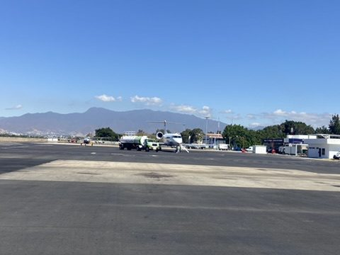
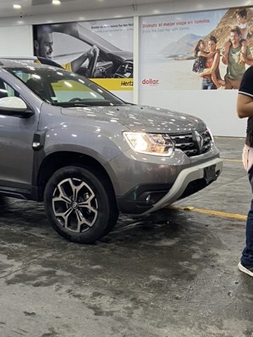
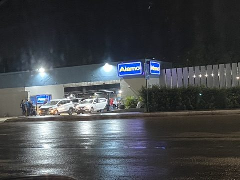
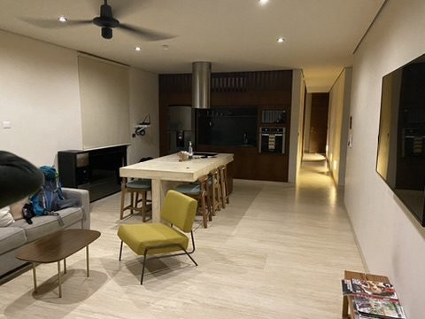

Travel day to the Caribbean: Goodbye to the mountains: flight from Oaxaca to Cancún on the Yucatán Peninsula. In the evening we pick up the rental car and drive about 1.5 hours down the coast to Tulum.



Arrival in Tulum: Our place is in Aldea Zama, the new residential area between town and beach. After Oaxaca's colonial houses, this feels like a different country.
